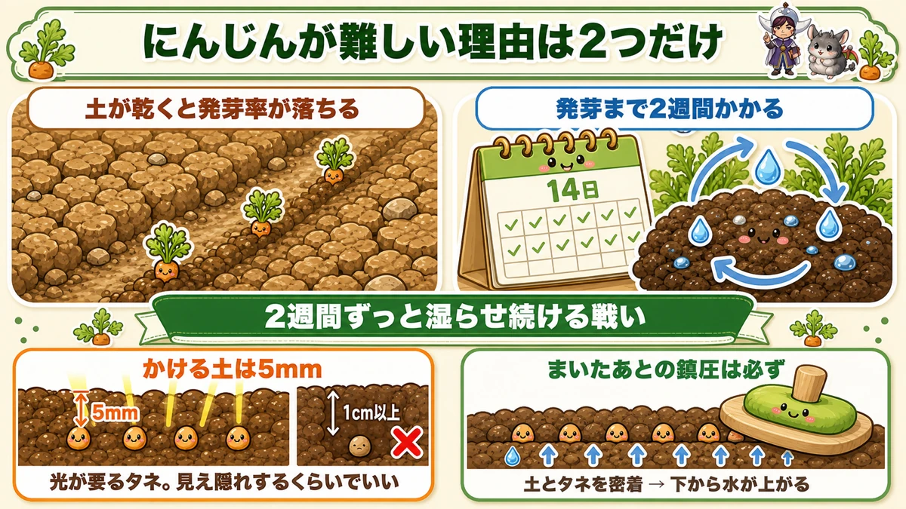
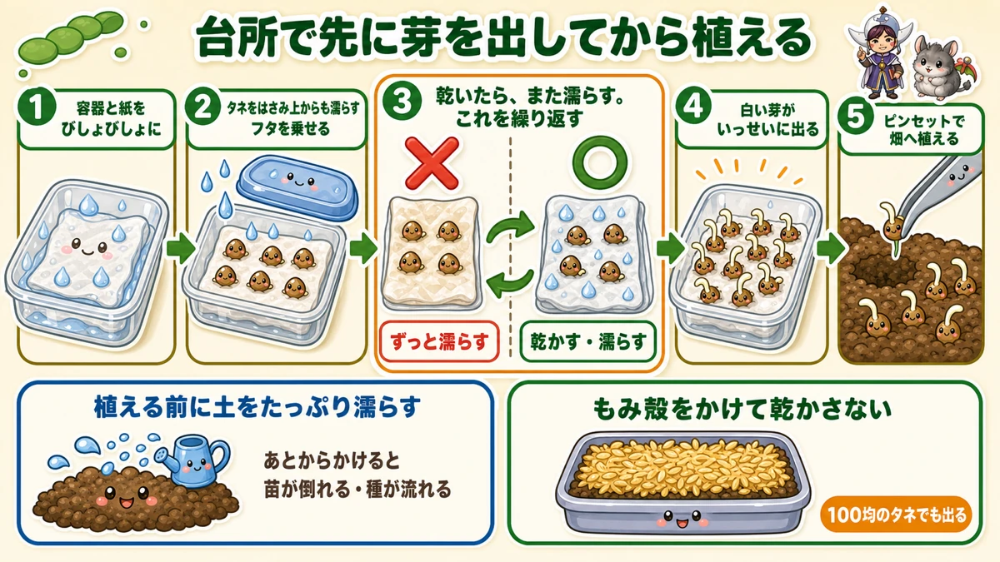
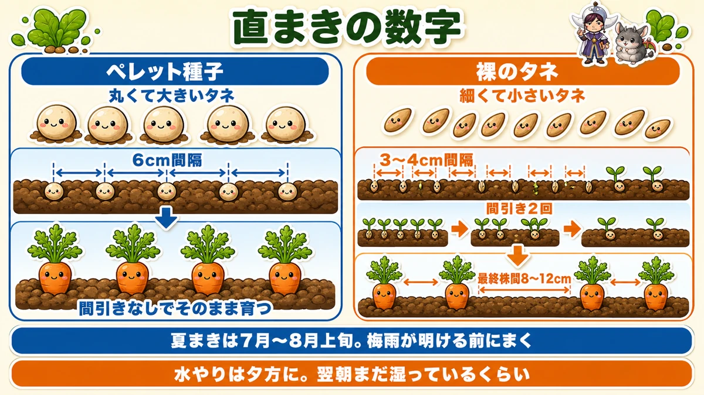
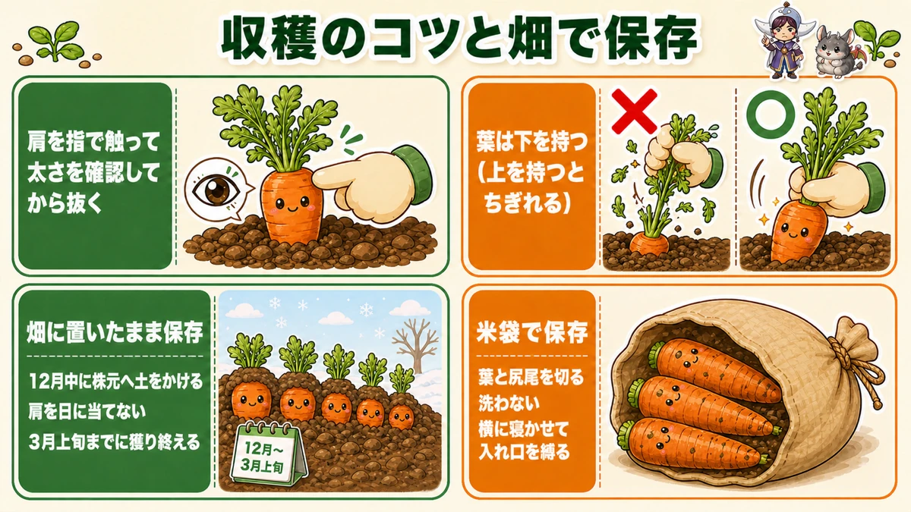

Germinate carrots in the kitchen, not the garden 🥕 It's the only hard part

🥕 "I've never once got carrot seed to come up."
🥕 "I watered every day and they were still hollow."
🥕 "I'd like to succeed once before I give up."
Hello, I'm Eiko. Eight years of growing vegetables organically and without pesticides, and a teaching licence in science.
Ask people which vegetable is difficult and carrots come up constantly. My first two years, I got a scattered handful of seedlings and quit halfway.
There's only one cause.
With carrots, if they germinate, you've essentially won.
Everyone who fails drops out at the same point: germination. Get past it and they largely look after themselves.
So this article is entirely about germination — and about giving up on germinating them in the ground at all. Done this way, even cheap seed comes up.
Why carrots in particular won't come up

What this diagram says （図解の文字）
- Only two reasons carrots are difficult
- "Germination rate falls when the soil dries" ／ "germination takes two weeks" — 14 days
- "A two-week battle to keep it damp the whole time"
- "Drill no deeper than 2 cm" — "the seed needs light; too deep and it won't come"
- "Always firm after sowing" — "seed in contact with soil → water rises from below"
Two conditions coincide:
- Dry soil and the germination rate collapses
- Germination takes two weeks
Together they mean keeping the soil surface damp continuously for a fortnight.
Think about a midsummer sowing: it can go a month without rain. Water morning and evening and the daytime heat takes all of it. It becomes a matter of luck — hence the scattered handful.
And the sowing itself is easy to get wrong
Carrot seed won't germinate without light. It's light-requiring seed, so don't sow deep — a drill of no more than 2 cm (¾ in). "Bury it well so it doesn't dry out" has exactly the opposite effect.
And: always firm after sowing. It's easy to skip, and with carrots it's essential. Seed pressed into contact with soil draws water up from below, so the seed stays damp even when the surface dries. Press with a palm, or the back of a hoe over a larger area.
Don't germinate them in the ground at all

What this diagram says （図解の文字）
- Sprout them in the kitchen, then plant
- 1 "Soak the container and the paper thoroughly"
- 2 "Sandwich the seed and wet it from above too" — "put the lid on"
- 3 "When it dries, wet it again. Repeat" — ✗ "keeping it permanently wet" ／ ○ "dry, then wet"
- 4 "White shoots appear"
If keeping soil damp for two weeks is hard, don't do it on soil. Germinate them in the kitchen and plant the sprouted seed.
It's almost absurdly easy, and close to 100 % reliable.
How
- Line a plastic container with kitchen paper and soak it
- Scatter the seed and fold the paper over, then wet it from above — a wet sandwich
- Put a lid on and leave it indoors
- When it dries out, wet it again. Repeat
Permanently wet doesn't work
This is the important part. I assumed drying would kill them, so I kept it wet throughout — and the germination was poor.
The right way is dry → wet → dry → wet. Wait until the paper is properly dry, then soak it again. Do that for a few days and one day they all put out white shoots at once. Bean-sprout-looking, and you're done.
Why the alternation helps, I can't fully explain. But it works. Possibly the change itself reads to the seed as "the season has moved".
And it works with cheap seed, which tells you the problem was never seed quality.
Planting the sprouted seed
One rule about order:
Wet the soil thoroughly before planting. Water afterwards and, with no roots yet, the seedlings fall over or the seed washes away. Wet first, then plant.
Sprouted seed tangles together, so separate it gently with tweezers. Honestly, this is the tedious part — partway through I switched to pulling clumps apart with my fingers, scattering them roughly and thinning later. That works well enough.
After planting, press the soil around them with a finger. And don't let them dry out until they root — a young carrot seedling dries and simply dissolves. A scatter of rice hulls on top holds moisture and makes a noticeable difference.
Once they're at thinning size, switch to "water when the surface is dry".
If you do sow direct: the numbers

What this diagram says （図解の文字）
- The numbers for direct sowing
- Pelleted seed — "round, large seed" — 6 cm apart — "grows on without thinning"
- Naked seed — "fine, small seed" — 3–4 cm apart — "thin twice" — "final spacing 8–12 cm"
- "Sow the summer crop before the rainy season ends" ／ "water in the evening"
- Pelleted seed (coated, round) — 6 cm apart, no thinning needed. If thinning annoys you, use this
- Naked seed — 3–4 cm apart, thinned twice, ending at 8–12 cm
When to sow
For the main crop, sow while the rain is still reliable. Where I am, that means before the rainy season breaks — once it has, you're back to the two-week battle alone.
If you must sow after that, aim for immediately after rain. Build the beds in advance so you can sow the moment it rains.
And water in the evening. Daytime water goes hot and dries straight off. Water well in the evening; it should still be damp next morning.
Variety
Look for one described as sweet, disease-resistant and productive on modest fertility — that last point matters if you grow organically, and such varieties tend to be quick too. One that covers both spring and summer sowings saves buying twice.
Harvest by feeling the shoulder

What this diagram says （図解の文字）
- Harvesting, and storing them in the ground
- "Feel the shoulder with a finger to check the thickness before pulling"
- ✗ "holding the leaves high up" ／ ○ "holding at the base" — "hold low; held high they tear"
- Storing in the ground: "draw soil over the crowns in December", "keep the shoulders out of the sun", "until early March"
You can't tell by looking
Unlike a radish, a carrot barely shows above ground. So feel the shoulder with a finger: scrape a little soil away and check the thickness. Thick, pull it; thin, leave it. Take the biggest first.
Commercial growers lift everything mechanically at once. Picking only what you need, as it fattens, is the home gardener's advantage.
Hold the leaves low
Grip the leaves high up and pull, and they tear off — carrot leaves are weaker than they look. Then you can't get a finger in and you have to dig.
Hold close to the crown and pull straight up and it slides out.
In a cold area, the soil can be frozen in the morning and they won't come. Harvest in the middle of the day.
Store them in the ground
The other useful thing: carrots keep in the ground until spring.
Radishes can be stored in soil too, but carrots are easier: less water in them, and they're already essentially buried.
So all you do is cover them with soil:
- Draw soil over the crowns in early winter
- The colder your area, the thicker the covering
- If you're worried, lay plastic or a tarpaulin over the top
Broken or buried leaves don't matter. I've read of them coming through a winter that reached −8 °C (18 °F) under nothing but soil, which is what persuaded me to trust it.
Do it even in a mild area
Not for cold — for sunburn. A shoulder that sits out of the soil in the sun discolours, much as a potato greens. It doesn't much affect the flavour, but it looks poor.
Until early spring
One limit to respect: lift them by around early March. After that they start moving again.
To sum up
- ✅ Germinate them and you've won
- ✅ It's hard because the soil must stay damp for two weeks
- ✅ Carrot seed needs light — drill no deeper than 2 cm
- ✅ Always firm after sowing, so water rises to the seed
- ✅ Sprout them between wet kitchen paper instead
- ✅ Dry, then wet, repeatedly. Permanently wet germinates badly
- ✅ Wet the soil before planting the sprouted seed, and keep it damp until rooted
- ✅ Direct sowing: pelleted at 6 cm, naked at 3–4 cm thinned to 8–12 cm
- ✅ Feel the shoulder, and hold the leaves low
- ✅ Cover the crowns and store them in the ground until early spring
You don't have to do all of it. Put some carrot seed between two sheets of wet kitchen paper tonight. That's the hard part solved 🥕
Thank you for reading!